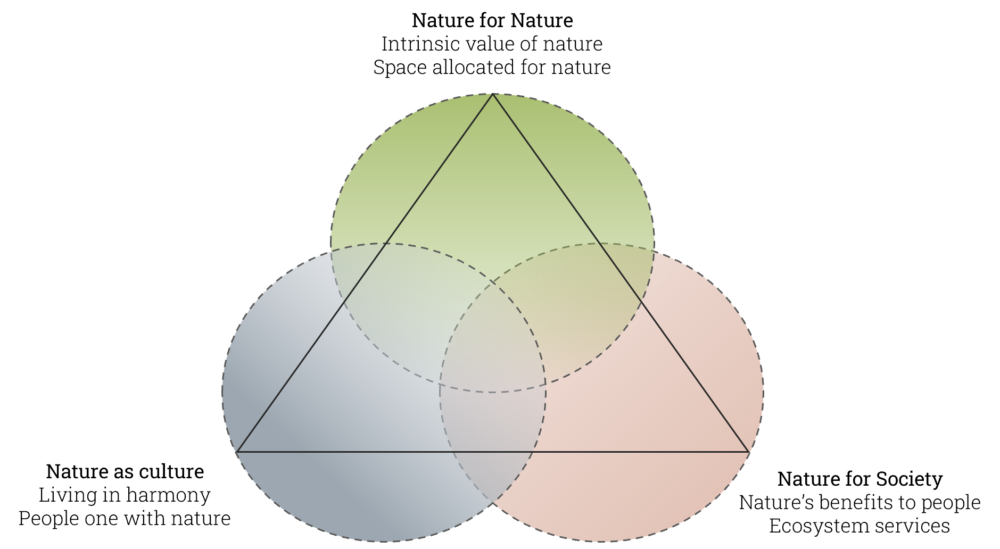

Biodiversity

Ecosystem Services (ES)

IUCN Category Ia
IUCN Category Ib
IUCN Category VI
Land Use Land Cover (LULC)

Land Use
The human use of a specific area for a certain purpose (such as residential, agriculture, recreation, industrial, etc.). Influenced by, but not synonymous with, land cover. Land-use change refers to a change in the use or management of land by humans, which may lead to a change in land cover.Land Cover
The physical coverage of land, usually expressed in terms of vegetation cover or lack of it. Related to, but not synonymous with, land use. Source: Milenium Ecosystem Assessement, 2005Modification of the Forest and Wildlife Law (Law No. 31973, 2023)
Nature’s Contribution to People (NCP)

Nature Futures Framework (NFF)
Normative Scenarios
REDD+ Project
Scenarios